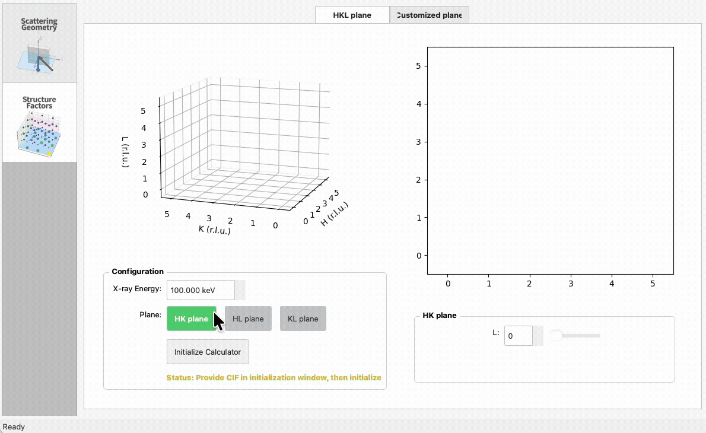
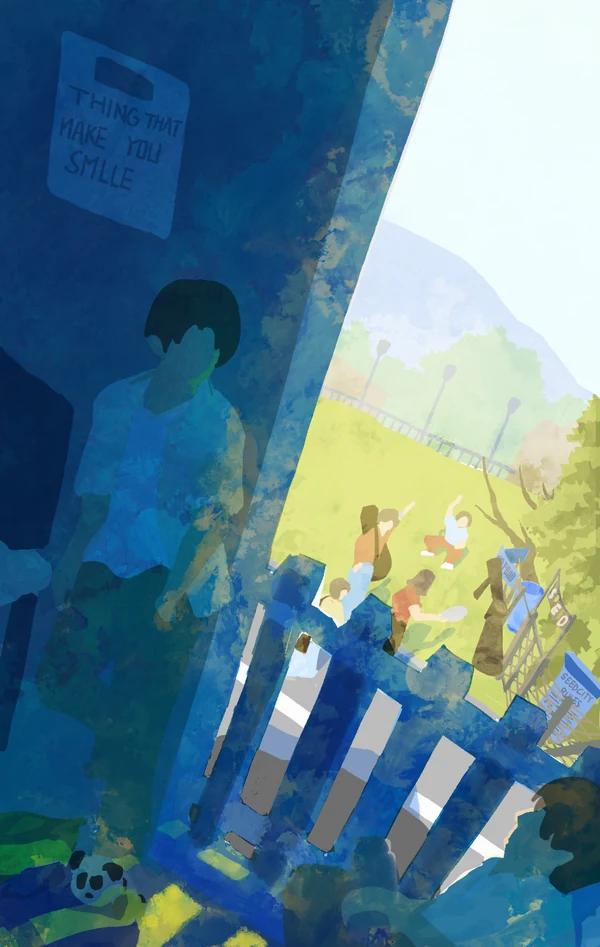
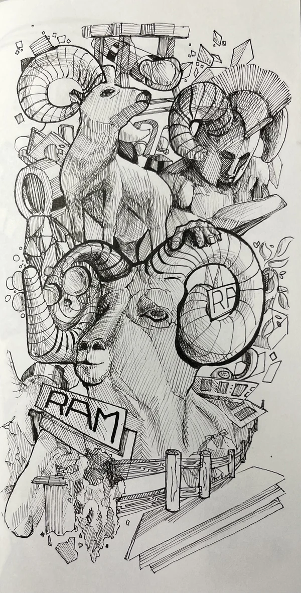
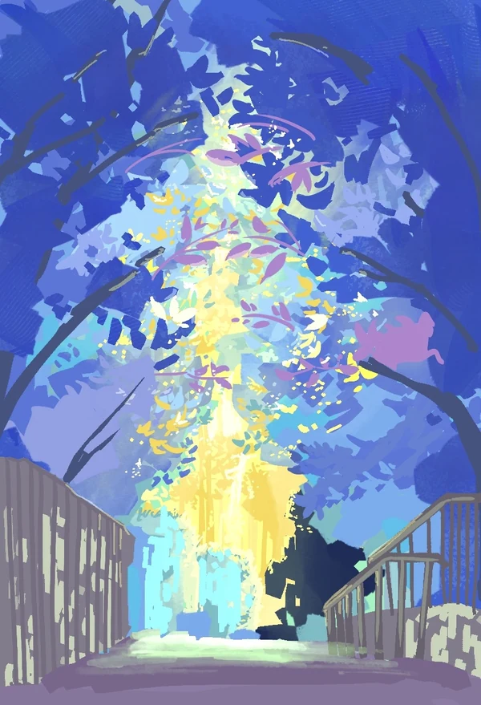

ADVISOR: X-ray toolbox
Software developmentInteractive GUI for visualising and calculating X-ray scattering/diffraction experiments.

Physics lectures & tutorials
Teaching
Instrumentation & lab control
Lab control &
Lab control &
crystal alignment
A desktop interface that brings robot positioning, live camera views and Laue diffraction acquisition into one workspace.
Explore the lab tools
Workflow automation · JohanWeb
Group website,
Group website,
simplified.
A self-report system and desktop app that turn group news into website updates: members submit, I review, JohanWeb handles the files and records.
Explore the workflow
Drawing & visual storytelling
Paintings &
Paintings &
drawings
Colour, character and imagined worlds, explored through painting and intricate ink drawings.
Visit the art gallery


Creative storytelling
A hand-drawn introduction
A journey through my background, the lab and my research, drawn in Mental Canvas for PhD Day.
Silent film · 1 min 03 sec. The camera moves through an illustrated timeline, my lab, synchrotron visits and an X-ray scattering experiment.